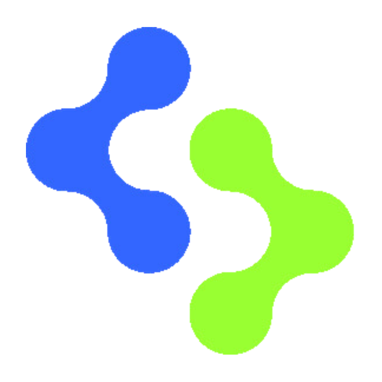

DeepSkill
Materiales
Clases
Biblioteca
Costes
Clase 7 · Guía docente
Clase 6 · Guía docente
Clase 5 · Guía docente
Clase 5 · Skills públicos
Clase 4 · Guía docente
Clase 3 · Práctica local
Clase 3 · Guía docente
Clase 2 · Práctica USGS
Clase 2 · Guía docente
Demo solar
Alternativa USGS
Digital Mine · Alcance
Digital Mine · Arquitectura
Digital Mine · Backlog
Digital Mine · SRS
Digital Mine · Decisiones
Digital Mine · VSM
Digital Mine · DDD-lite
Digital Mine · ADR
Digital Mine · C4
Digital Mine · Plan de datos sintéticos
Digital Mine · Diccionario de datos
Guía del instructor
Fuentes y documentación
Opciones de demo
Guías del curso
Descargar fuente Markdown ↓
Cargando la guía…